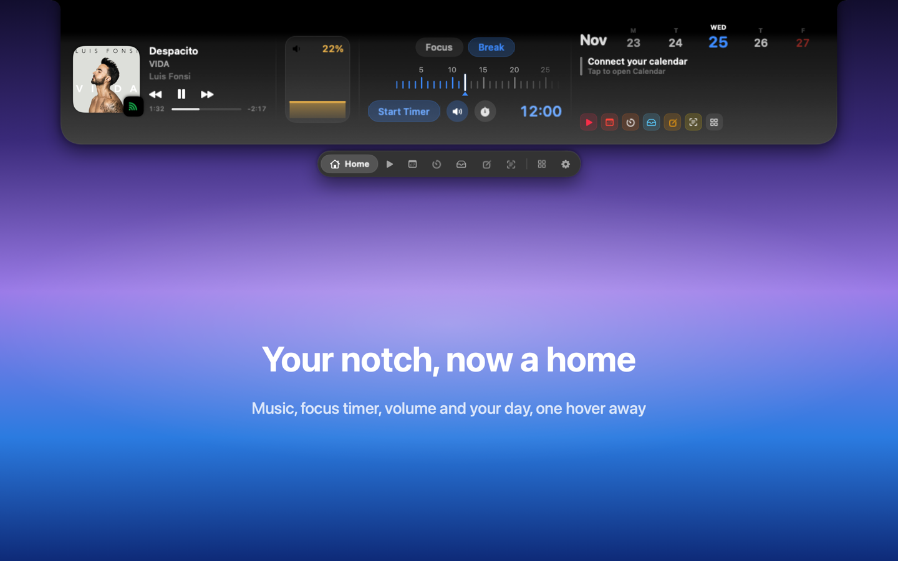

NotchLake turns the notch on your Mac into a home for music, your calendar, timers, files and a teleprompter that follows your voice.

Contact
Questions, bug reports or ideas: ts007.me@gmail.com. We usually reply within two working days. Please mention your macOS version and Mac model.
Common questions
How do I open NotchLake? Move the pointer to the notch (or the top-centre of the screen on Macs without one). You can also use the NotchLake icon in the menu bar.
Music or Spotify isn't showing. Start playing something, then open the Music tab. If you clicked “Don't Allow” earlier, turn NotchLake on in System Settings → Privacy & Security → Automation.
The Prompter's Voice mode doesn't follow me. Allow Microphone and Speech Recognition for NotchLake in System Settings → Privacy & Security. Recognition runs on your Mac; nothing is recorded.
Weather shows the wrong place. Allow Location for NotchLake, or type a city in the Weather widget.
Where are converted images saved? Next to the originals, or in Downloads if that folder isn't writable. Click “Show in Finder” in the Files widget.
How do I keep NotchLake open at login? Settings → General → Launch at login.
Privacy
NotchLake has no account, analytics or tracking. Read the full privacy policy.